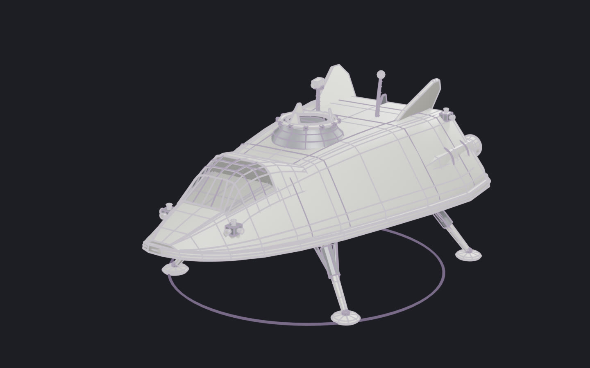

ARGUS's crewed lander: a wedge lifting body on a heat-shield belly, four folding legs, a glazed flight deck and a docking collar on its back. The ship was built around it, carrying this lander's own construct at its docking port, so the two always match. Drag to orbit; click it, then scroll to zoom; R replays the assembly, P shows every part as designed, not measured, S shows it as a solid.

© 2026 Artyom Andreyev. All rights reserved: to view here, not to copy, adapt or reuse. Not under Construct's Apache-2.0 licence.